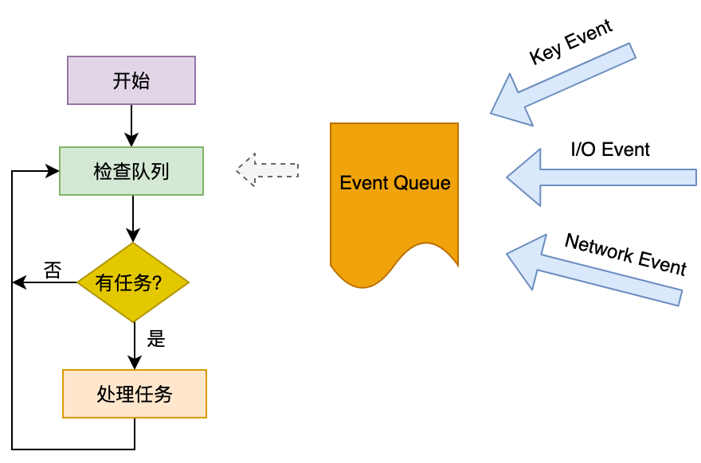
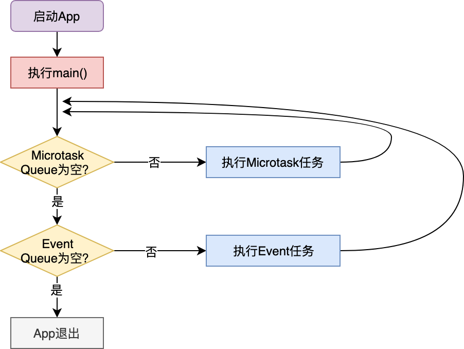
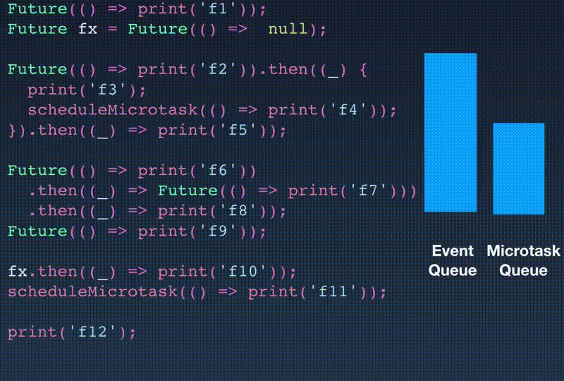

- 00 开篇词 为什么每一位大前端从业者都应该学习Flutter？.md.html
- 01 预习篇 · 从0开始搭建Flutter工程环境.md.html
- 02 预习篇 · Dart语言概览.md.html
- 03 深入理解跨平台方案的历史发展逻辑.md.html
- 04 Flutter区别于其他方案的关键技术是什么？.md.html
- 05 从标准模板入手，体会Flutter代码是如何运行在原生系统上的.md.html
- 06 基础语法与类型变量：Dart是如何表示信息的？.md.html
- 07 函数、类与运算符：Dart是如何处理信息的？.md.html
- 08 综合案例：掌握Dart核心特性.md.html
- 09 Widget，构建Flutter界面的基石.md.html
- 10 Widget中的State到底是什么？.md.html
- 11 提到生命周期，我们是在说什么？.md.html
- 12 经典控件（一）：文本、图片和按钮在Flutter中怎么用？.md.html
- 13 经典控件（二）：UITableView_ListView在Flutter中是什么？.md.html
- 14 经典布局：如何定义子控件在父容器中排版的位置？.md.html
- 15 组合与自绘，我该选用何种方式自定义Widget？.md.html
- 16 从夜间模式说起，如何定制不同风格的App主题？.md.html
- 17 依赖管理（一）：图片、配置和字体在Flutter中怎么用？.md.html
- 18 依赖管理（二）：第三方组件库在Flutter中要如何管理？.md.html
- 19 用户交互事件该如何响应？.md.html
- 20 关于跨组件传递数据，你只需要记住这三招.md.html
- 21 路由与导航，Flutter是这样实现页面切换的.md.html
- 22 如何构造炫酷的动画效果？.md.html
- 23 单线程模型怎么保证UI运行流畅？.md.html
- 24 HTTP网络编程与JSON解析.md.html
- 25 本地存储与数据库的使用和优化.md.html
- 26 如何在Dart层兼容Android_iOS平台特定实现？（一）.md.html
- 27 如何在Dart层兼容Android_iOS平台特定实现？（二）.md.html
- 28 如何在原生应用中混编Flutter工程？.md.html
- 29 混合开发，该用何种方案管理导航栈？.md.html
- 30 为什么需要做状态管理，怎么做？.md.html
- 31 如何实现原生推送能力？.md.html
- 32 适配国际化，除了多语言我们还需要注意什么_.md.html
- 33 如何适配不同分辨率的手机屏幕？.md.html
- 34 如何理解Flutter的编译模式？.md.html
- 35 Hot Reload是怎么做到的？.md.html
- 36 如何通过工具链优化开发调试效率？.md.html
- 37 如何检测并优化Flutter App的整体性能表现？.md.html
- 38 如何通过自动化测试提高交付质量？.md.html
- 39 线上出现问题，该如何做好异常捕获与信息采集？.md.html
- 40 衡量Flutter App线上质量，我们需要关注这三个指标.md.html
- 41 组件化和平台化，该如何组织合理稳定的Flutter工程结构？.md.html
- 42 如何构建高效的Flutter App打包发布环境？.md.html
- 43 如何构建自己的Flutter混合开发框架（一）？.md.html
- 44 如何构建自己的Flutter混合开发框架（二）？.md.html
- 特别放送 温故而知新，与你说说专栏的那些思考题.md.html
- 结束语 勿畏难，勿轻略.md.html
- 捐赠
23 单线程模型怎么保证UI运行流畅？
你好，我是陈航。
在上一篇文章中，我带你一起学习了如何在Flutter中实现动画。对于组件动画，Flutter将动画的状态与渲染进行了分离，因此我们需要使用动画曲线生成器Animation、动画状态控制器AnimationController与动画进度监听器一起配合完成动画更新；而对于跨页面动画，Flutter提供了Hero组件，可以实现共享元素变换的页面切换效果。
在之前的章节里，我们介绍了很多Flutter框架出色的渲染和交互能力。支撑起这些复杂的能力背后，实际上是基于单线程模型的Dart。那么，与原生Android和iOS的多线程机制相比，单线程的Dart如何从语言设计层面和代码运行机制上保证Flutter UI的流畅性呢？
因此今天，我会通过几个小例子，循序渐进地向你介绍Dart语言的Event Loop处理机制、异步处理和并发编程的原理和使用方法，从语言设计和实践层面理解Dart单线程模型下的代码运行本质，从而懂得后续如何在工作中使用Future与Isolate，优化我们的项目。
Event Loop机制
首先，我们需要建立这样一个概念，那就是Dart是单线程的。那单线程意味着什么呢？这意味着Dart代码是有序的，按照在main函数出现的次序一个接一个地执行，不会被其他代码中断。另外，作为支持Flutter这个UI框架的关键技术，Dart当然也支持异步。需要注意的是，单线程和异步并不冲突。
那为什么单线程也可以异步？
这里有一个大前提，那就是我们的App绝大多数时间都在等待。比如，等用户点击、等网络请求返回、等文件IO结果，等等。而这些等待行为并不是阻塞的。比如说，网络请求，Socket本身提供了select模型可以异步查询；而文件IO，操作系统也提供了基于事件的回调机制。
所以，基于这些特点，单线程模型可以在等待的过程中做别的事情，等真正需要响应结果了，再去做对应的处理。因为等待过程并不是阻塞的，所以给我们的感觉就像是同时在做多件事情一样。但其实始终只有一个线程在处理你的事情。
等待这个行为是通过Event Loop驱动的。事件队列Event Queue会把其他平行世界（比如Socket）完成的，需要主线程响应的事件放入其中。像其他语言一样，Dart也有一个巨大的事件循环，在不断的轮询事件队列，取出事件（比如，键盘事件、I\O事件、网络事件等），在主线程同步执行其回调函数，如下图所示：

图1 简化版Event Loop
异步任务
事实上，图1的Event Loop示意图只是一个简化版。在Dart中，实际上有两个队列，一个事件队列（Event Queue），另一个则是微任务队列（Microtask Queue）。在每一次事件循环中，Dart总是先去第一个微任务队列中查询是否有可执行的任务，如果没有，才会处理后续的事件队列的流程。
所以，Event Loop完整版的流程图，应该如下所示：

图2 Microtask Queue与Event Queue
接下来，我们分别看一下这两个队列的特点和使用场景吧。
首先，我们看看微任务队列。微任务顾名思义，表示一个短时间内就会完成的异步任务。从上面的流程图可以看到，微任务队列在事件循环中的优先级是最高的，只要队列中还有任务，就可以一直霸占着事件循环。
微任务是由scheduleMicroTask建立的。如下所示，这段代码会在下一个事件循环中输出一段字符串：
scheduleMicrotask(() => print('This is a microtask'));
不过，一般的异步任务通常也很少必须要在事件队列前完成，所以也不需要太高的优先级，因此我们通常很少会直接用到微任务队列，就连Flutter内部，也只有7处用到了而已（比如，手势识别、文本输入、滚动视图、保存页面效果等需要高优执行任务的场景）。
异步任务我们用的最多的还是优先级更低的Event Queue。比如，I/O、绘制、定时器这些异步事件，都是通过事件队列驱动主线程执行的。
Dart为Event Queue的任务建立提供了一层封装，叫作Future。从名字上也很容易理解，它表示一个在未来时间才会完成的任务。
把一个函数体放入Future，就完成了从同步任务到异步任务的包装。Future还提供了链式调用的能力，可以在异步任务执行完毕后依次执行链路上的其他函数体。
接下来，我们看一个具体的代码示例：分别声明两个异步任务，在下一个事件循环中输出一段字符串。其中第二个任务执行完毕之后，还会继续输出另外两段字符串：
Future(() => print('Running in Future 1'));//下一个事件循环输出字符串
Future(() => print(‘Running in Future 2'))
.then((_) => print('and then 1'))
.then((_) => print('and then 2’));//上一个事件循环结束后，连续输出三段字符串
当然，这两个Future异步任务的执行优先级比微任务的优先级要低。
正常情况下，一个Future异步任务的执行是相对简单的：在我们声明一个Future时，Dart会将异步任务的函数执行体放入事件队列，然后立即返回，后续的代码继续同步执行。而当同步执行的代码执行完毕后，事件队列会按照加入事件队列的顺序（即声明顺序），依次取出事件，最后同步执行Future的函数体及后续的then。
这意味着，then与Future函数体共用一个事件循环。而如果Future有多个then，它们也会按照链式调用的先后顺序同步执行，同样也会共用一个事件循环。
如果Future执行体已经执行完毕了，但你又拿着这个Future的引用，往里面加了一个then方法体，这时Dart会如何处理呢？面对这种情况，Dart会将后续加入的then方法体放入微任务队列，尽快执行。
下面的代码演示了Future的执行规则，即，先加入事件队列，或者先声明的任务先执行；then在Future结束后立即执行。
- 在第一个例子中，由于f1比f2先声明，因此会被先加入事件队列，所以f1比f2先执行；
- 在第二个例子中，由于Future函数体与then共用一个事件循环，因此f3执行后会立刻同步执行then 3；
- 最后一个例子中，Future函数体是null，这意味着它不需要也没有事件循环，因此后续的then也无法与它共享。在这种场景下，Dart会把后续的then放入微任务队列，在下一次事件循环中执行。
//f1比f2先执行
Future(() => print('f1'));
Future(() => print('f2'));
//f3执行后会立刻同步执行then 3
Future(() => print('f3')).then((_) => print('then 3'));
//then 4会加入微任务队列，尽快执行
Future(() => null).then((_) => print('then 4'));
说了这么多规则，可能大家并没有完全记住。那我们通过一个综合案例，来把之前介绍的各个执行规则都串起来，再集中学习一下。
在下面的例子中，我们依次声明了若干个异步任务Future，以及微任务。在其中的一些Future内部，我们又内嵌了Future与microtask的声明：
Future(() => print('f1'));//声明一个匿名Future
Future fx = Future(() => null);//声明Future fx，其执行体为null
//声明一个匿名Future，并注册了两个then。在第一个then回调里启动了一个微任务
Future(() => print('f2')).then((_) {
print('f3');
scheduleMicrotask(() => print('f4'));
}).then((_) => print('f5'));
//声明了一个匿名Future，并注册了两个then。第一个then是一个Future
Future(() => print('f6'))
.then((_) => Future(() => print('f7')))
.then((_) => print('f8'));
//声明了一个匿名Future
Future(() => print('f9'));
//往执行体为null的fx注册了了一个then
fx.then((_) => print('f10'));
//启动一个微任务
scheduleMicrotask(() => print('f11'));
print('f12');
运行一下，上述各个异步任务会依次打印其内部执行结果：
f12
f11
f1
f10
f2
f3
f5
f4
f6
f9
f7
f8
看到这儿，你可能已经懵了。别急，我们先来看一下这段代码执行过程中，Event Queue与Microtask Queue中的变化情况，依次分析一下它们的执行顺序为什么会是这样的：

图3 Event Queue与Microtask Queue变化示例
- 因为其他语句都是异步任务，所以先打印f12。
- 剩下的异步任务中，微任务队列优先级最高，因此随后打印f11；然后按照Future声明的先后顺序，打印f1。
- 随后到了fx，由于fx的执行体是null，相当于执行完毕了，Dart将fx的then放入微任务队列，由于微任务队列的优先级最高，因此fx的then还是会最先执行，打印f10。
- 然后到了fx下面的f2，打印f2，然后执行then，打印f3。f4是一个微任务，要到下一个事件循环才执行，因此后续的then继续同步执行，打印f5。本次事件循环结束，下一个事件循环取出f4这个微任务，打印f4。
- 然后到了f2下面的f6，打印f6，然后执行then。这里需要注意的是，这个then是一个Future异步任务，因此这个then，以及后续的then都被放入到事件队列中了。
- f6下面还有f9，打印f9。
- 最后一个事件循环，打印f7，以及后续的f8。
上面的代码很是烧脑，万幸我们平时开发Flutter时一般不会遇到这样奇葩的写法，所以你大可放心。你只需要记住一点：then会在Future函数体执行完毕后立刻执行，无论是共用同一个事件循环还是进入下一个微任务。
在深入理解Future异步任务的执行规则之后，我们再来看看怎么封装一个异步函数。
异步函数
对于一个异步函数来说，其返回时内部执行动作并未结束，因此需要返回一个Future对象，供调用者使用。调用者根据Future对象，来决定：是在这个Future对象上注册一个then，等Future的执行体结束了以后再进行异步处理；还是一直同步等待Future执行体结束。
对于异步函数返回的Future对象，如果调用者决定同步等待，则需要在调用处使用await关键字，并且在调用处的函数体使用async关键字。
在下面的例子中，异步方法延迟3秒返回了一个Hello 2019，在调用处我们使用await进行持续等待，等它返回了再打印：
//声明了一个延迟3秒返回Hello的Future，并注册了一个then返回拼接后的Hello 2019
Future<String> fetchContent() =>
Future<String>.delayed(Duration(seconds:3), () => "Hello")
.then((x) => "$x 2019");
main() async{
print(await fetchContent());//等待Hello 2019的返回
}
也许你已经注意到了，我们在使用await进行等待的时候，在等待语句的调用上下文函数main加上了async关键字。为什么要加这个关键字呢？
因为Dart中的await并不是阻塞等待，而是异步等待。Dart会将调用体的函数也视作异步函数，将等待语句的上下文放入Event Queue中，一旦有了结果，Event Loop就会把它从Event Queue中取出，等待代码继续执行。
接下来，为了帮助你加深印象，我准备了两个具体的案例。
我们先来看下这段代码。第二行的then执行体f2是一个Future，为了等它完成再进行下一步操作，我们使用了await，期望打印结果为f1、f2、f3、f4：
Future(() => print('f1'))
.then((_) async => await Future(() => print('f2')))
.then((_) => print('f3'));
Future(() => print('f4'));
实际上，当你运行这段代码时就会发现，打印出来的结果其实是f1、f4、f2、f3！
我来给你分析一下这段代码的执行顺序：
- 按照任务的声明顺序，f1和f4被先后加入事件队列。
- f1被取出并打印；然后到了then。then的执行体是个future f2，于是放入Event Queue。然后把await也放到Event Queue里。
- 这个时候要注意了，Event Queue里面还有一个f4，我们的await并不能阻塞f4的执行。因此，Event Loop先取出f4，打印f4；然后才能取出并打印f2，最后把等待的await取出，开始执行后面的f3。
由于await是采用事件队列的机制实现等待行为的，所以比它先在事件队列中的f4并不会被它阻塞。
接下来，我们再看另一个例子：在主函数调用一个异步函数去打印一段话，而在这个异步函数中，我们使用await与async同步等待了另一个异步函数返回字符串：
//声明了一个延迟2秒返回Hello的Future，并注册了一个then返回拼接后的Hello 2019
Future<String> fetchContent() =>
Future<String>.delayed(Duration(seconds:2), () => "Hello")
.then((x) => "$x 2019");
//异步函数会同步等待Hello 2019的返回，并打印
func() async => print(await fetchContent());
main() {
print("func before");
func();
print("func after");
}
运行这段代码，我们发现最终输出的顺序其实是“func before”“func after”“Hello 2019”。func函数中的等待语句似乎没起作用。这是为什么呢？
同样，我来给你分析一下这段代码的执行顺序：
- 首先，第一句代码是同步的，因此先打印“func before”。
- 然后，进入func函数，func函数调用了异步函数fetchContent，并使用await进行等待，因此我们把fetchContent、await语句的上下文函数func先后放入事件队列。
- await的上下文函数并不包含调用栈，因此func后续代码继续执行，打印“func after”。
- 2秒后，fetchContent异步任务返回“Hello 2019”，于是func的await也被取出，打印“Hello 2019”。
通过上述分析，你发现了什么现象？那就是await与async只对调用上下文的函数有效，并不向上传递。因此对于这个案例而言，func是在异步等待。如果我们想在main函数中也同步等待，需要在调用异步函数时也加上await，在main函数也加上async。
经过上面两个例子的分析，你应该已经明白await与async是如何配合，完成等待工作的了吧。
介绍完了异步，我们再来看在Dart中，如何通过多线程实现并发。
Isolate
尽管Dart是基于单线程模型的，但为了进一步利用多核CPU，将CPU密集型运算进行隔离，Dart也提供了多线程机制，即Isolate。在Isolate中，资源隔离做得非常好，每个Isolate都有自己的Event Loop与Queue，Isolate之间不共享任何资源，只能依靠消息机制通信，因此也就没有资源抢占问题。
和其他语言一样，Isolate的创建非常简单，我们只要给定一个函数入口，创建时再传入一个参数，就可以启动Isolate了。如下所示，我们声明了一个Isolate的入口函数，然后在main函数中启动它，并传入了一个字符串参数：
doSth(msg) => print(msg);
main() {
Isolate.spawn(doSth, "Hi");
...
}
但更多情况下，我们的需求并不会这么简单，不仅希望能并发，还希望Isolate在并发执行的时候告知主Isolate当前的执行结果。
对于执行结果的告知，Isolate通过发送管道（SendPort）实现消息通信机制。我们可以在启动并发Isolate时将主Isolate的发送管道作为参数传给它，这样并发Isolate就可以在任务执行完毕后利用这个发送管道给我们发消息了。
下面我们通过一个例子来说明：在主Isolate里，我们创建了一个并发Isolate，在函数入口传入了主Isolate的发送管道，然后等待并发Isolate的回传消息。在并发Isolate中，我们用这个管道给主Isolate发了一个Hello字符串：
Isolate isolate;
start() async {
ReceivePort receivePort= ReceivePort();//创建管道
//创建并发Isolate，并传入发送管道
isolate = await Isolate.spawn(getMsg, receivePort.sendPort);
//监听管道消息
receivePort.listen((data) {
print('Data：$data');
receivePort.close();//关闭管道
isolate?.kill(priority: Isolate.immediate);//杀死并发Isolate
isolate = null;
});
}
//并发Isolate往管道发送一个字符串
getMsg(sendPort) => sendPort.send("Hello");
这里需要注意的是，在Isolate中，发送管道是单向的：我们启动了一个Isolate执行某项任务，Isolate执行完毕后，发送消息告知我们。如果Isolate执行任务时，需要依赖主Isolate给它发送参数，执行完毕后再发送执行结果给主Isolate，这样双向通信的场景我们如何实现呢？答案也很简单，让并发Isolate也回传一个发送管道即可。
接下来，我们以一个并发计算阶乘的例子来说明如何实现双向通信。
在下面的例子中，我们创建了一个异步函数计算阶乘。在这个异步函数内，创建了一个并发Isolate，传入主Isolate的发送管道；并发Isolate也回传一个发送管道；主Isolate收到回传管道后，发送参数N给并发Isolate，然后立即返回一个Future；并发Isolate用参数N，调用同步计算阶乘的函数，返回执行结果；最后，主Isolate打印了返回结果：
//并发计算阶乘
Future<dynamic> asyncFactoriali(n) async{
final response = ReceivePort();//创建管道
//创建并发Isolate，并传入管道
await Isolate.spawn(_isolate,response.sendPort);
//等待Isolate回传管道
final sendPort = await response.first as SendPort;
//创建了另一个管道answer
final answer = ReceivePort();
//往Isolate回传的管道中发送参数，同时传入answer管道
sendPort.send([n,answer.sendPort]);
return answer.first;//等待Isolate通过answer管道回传执行结果
}
//Isolate函数体，参数是主Isolate传入的管道
_isolate(initialReplyTo) async {
final port = ReceivePort();//创建管道
initialReplyTo.send(port.sendPort);//往主Isolate回传管道
final message = await port.first as List;//等待主Isolate发送消息(参数和回传结果的管道)
final data = message[0] as int;//参数
final send = message[1] as SendPort;//回传结果的管道
send.send(syncFactorial(data));//调用同步计算阶乘的函数回传结果
}
//同步计算阶乘
int syncFactorial(n) => n < 2 ? n : n * syncFactorial(n-1);
main() async => print(await asyncFactoriali(4));//等待并发计算阶乘结果
看完这段代码你是什么感觉呢？我们只是为了并发计算一个阶乘，这样是不是太繁琐了？
没错，确实太繁琐了。在Flutter中，像这样执行并发计算任务我们可以采用更简单的方式。Flutter提供了支持并发计算的compute函数，其内部对Isolate的创建和双向通信进行了封装抽象，屏蔽了很多底层细节，我们在调用时只需要传入函数入口和函数参数，就能够实现并发计算和消息通知。
我们试着用compute函数改造一下并发计算阶乘的代码：
//同步计算阶乘
int syncFactorial(n) => n < 2 ? n : n * syncFactorial(n-1);
//使用compute函数封装Isolate的创建和结果的返回
main() async => print(await compute(syncFactorial, 4));
可以看到，用compute函数改造以后，整个代码就变成了两行，现在并发计算阶乘的代码看起来就清爽多了。
总结
好了，今天关于Dart的异步与并发机制、实现原理的分享就到这里了，我们来简单回顾一下主要内容。
Dart是单线程的，但通过事件循环可以实现异步。而Future是异步任务的封装，借助于await与async，我们可以通过事件循环实现非阻塞的同步等待；Isolate是Dart中的多线程，可以实现并发，有自己的事件循环与Queue，独占资源。Isolate之间可以通过消息机制进行单向通信，这些传递的消息通过对方的事件循环驱动对方进行异步处理。
在UI编程过程中，异步和多线程是两个相伴相生的名词，也是很容易混淆的概念。对于异步方法调用而言，代码不需要等待结果的返回，而是通过其他手段（比如通知、回调、事件循环或多线程）在后续的某个时刻主动（或被动）地接收执行结果。
因此，从辩证关系上来看，异步与多线程并不是一个同等关系：异步是目的，多线程只是我们实现异步的一个手段之一。而在Flutter中，借助于UI框架提供的事件循环，我们可以不用阻塞的同时等待多个异步任务，因此并不需要开多线程。我们一定要记住这一点。
我把今天分享所涉及到的知识点打包到了GitHub中，你可以下载下来，反复运行几次，加深理解。
思考题
最后，我给你留下两道思考题吧。
- 在通过并发Isolate计算阶乘的例子中，我在asyncFactoriali方法里先后发给了并发Isolate两个SendPort。你能否解释下这么做的原因？可以只发一个SendPort吗？
- 请改造以下代码，在不改变整体异步结构的情况下，实现输出结果为f1、f2、f3、f4。
Future(() => print('f1'))
.then((_) async => await Future(() => print('f2')))
.then((_) => print('f3'));
Future(() => print('f4'));
欢迎你在评论区给我留言分享你的观点，我会在下一篇文章中等待你！感谢你的收听，也欢迎你把这篇文章分享给更多的朋友一起阅读。
© 2019 - 2023 Liangliang Lee. Powered by gin and hexo-theme-book.